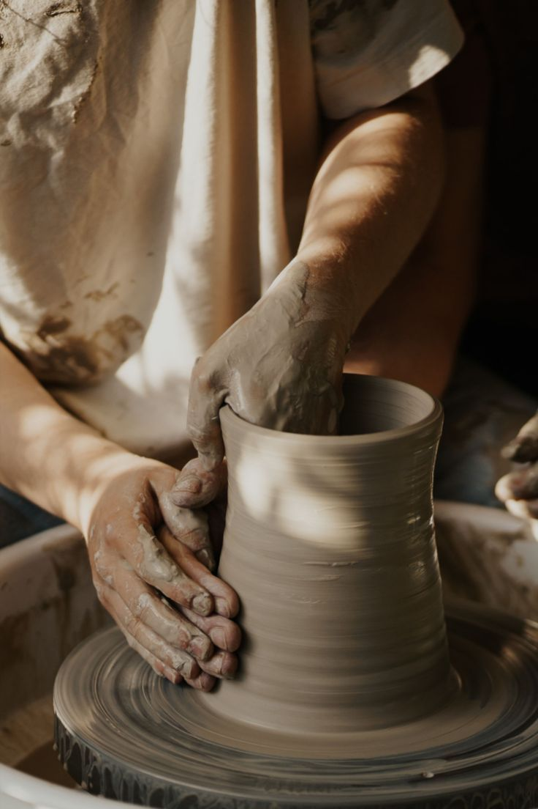
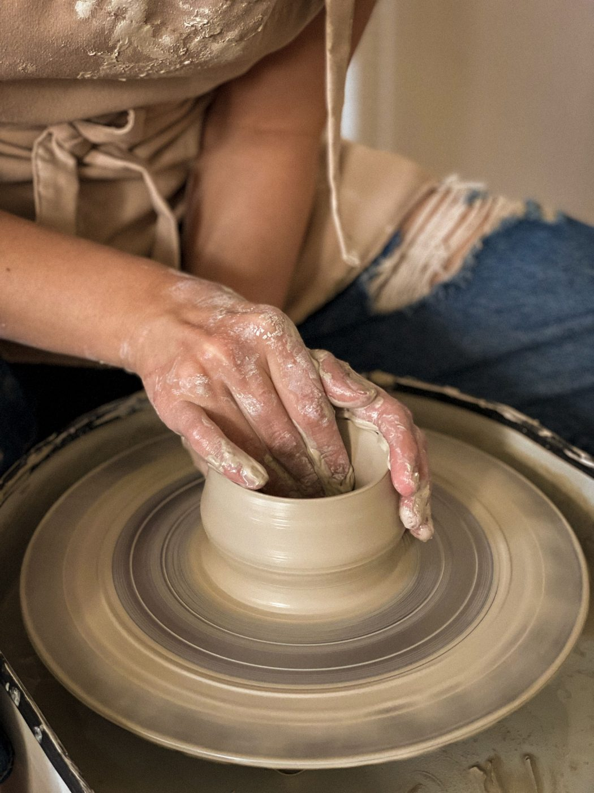
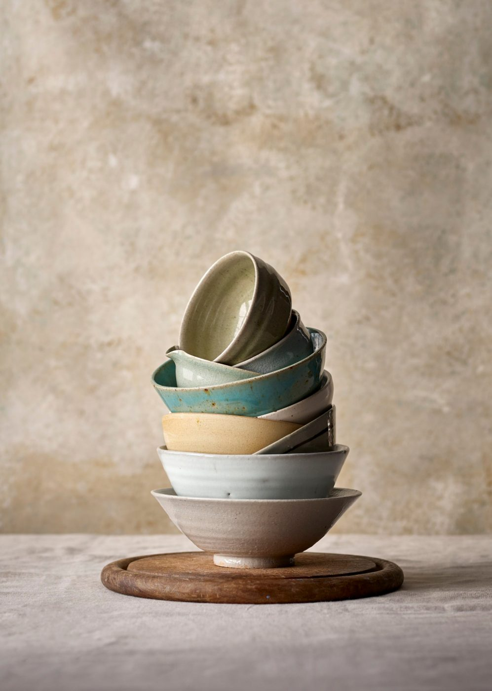

About
Practice site. Wadstone Pottery, Ferrow, its firings, classes, prices and test results are fictional. Recipes follow common studio ranges. Test any glaze yourself before using it on food ware.
Since 2014
Wad: the clay pad a pot stands on in the kiln.
- 2014
Two wheels and one electric kiln in a garage on Mill Lane.
- 2016
Moved to Unit 4, Tannery Yard. First evening classes, 6 seats.
- 2018
Gas kiln C built, 0.68 m³. First cone 10 reduction firings.
- 2020
Glaze library started: 12 recipes on 140 test tiles.
- 2023
Open studio membership. 12 wheels.
- 2026
36 recipes in the library, 2,140 test tiles fired.
How a glaze joins the library
10-07 Chun Blue, cone 10.
Batch
Mix 500 g dry. Sieve twice through 80 mesh. Set specific gravity with a hydrometer.
Dip
Vertical buff and porcelain tiles with three pressed ridges. One dip of 3 seconds, a second dip to half height.
Fire
Two tiles per recipe: one on the top shelf, one on the bottom. Kiln log kept for every firing.
Read
Check run on the foot, breaking on the ridges, surface under a lamp. Photograph against a grey card.
Liner check
Glazes marked food-safe are used inside our own tableware. Lemon and vinegar spot test on each new batch.
Figures
- Glazes in the library
- 36
- Test tiles fired since 2020
- 2,140
- Kilns: two electric, one gas
- 3
- Wheels
- 12
- Open studio members
- 41
Studio



Photo credits
Found on Pinterest. Each photograph belongs to the person who posted it; licence not confirmed. Replaced on request.
- stack.jpg Pinterest pin
- bisque-boards.jpg Pinterest pin
- green-cups.jpg Pinterest pin
- shop-shelves.jpg Pinterest pin
- glazed-shelves.jpg Pinterest pin
- bisque-room.jpg Pinterest pin
- centring.jpg Pinterest pin
- wheel-top.jpg Pinterest pin
- wheel-spin.jpg Pinterest pin
- cylinder.jpg Pinterest pin
- opening.jpg Pinterest pin
- pulling.jpg Pinterest pin